Understanding the basic controls in Roblox Studio is essential for building and navigating your projects. These controls allow you to move the camera, select objects, and manipulate parts within the 3D workspace.
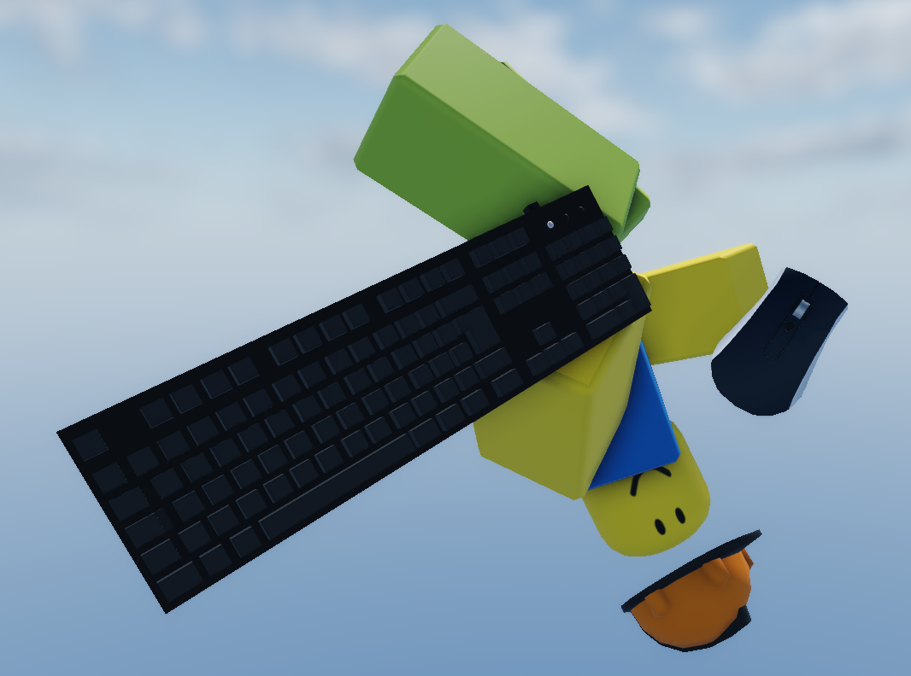
Before you continue, adjust your graphics level if you have a lower performing device. (File > Studio Settings > Editor Graphics Level)
They can be found in the 'view' tab of studio.
The Workspace is the root container in Roblox Studio where all 3D objects that appear in the game world are stored. It acts as the main environment where parts, models, and scripts interact.
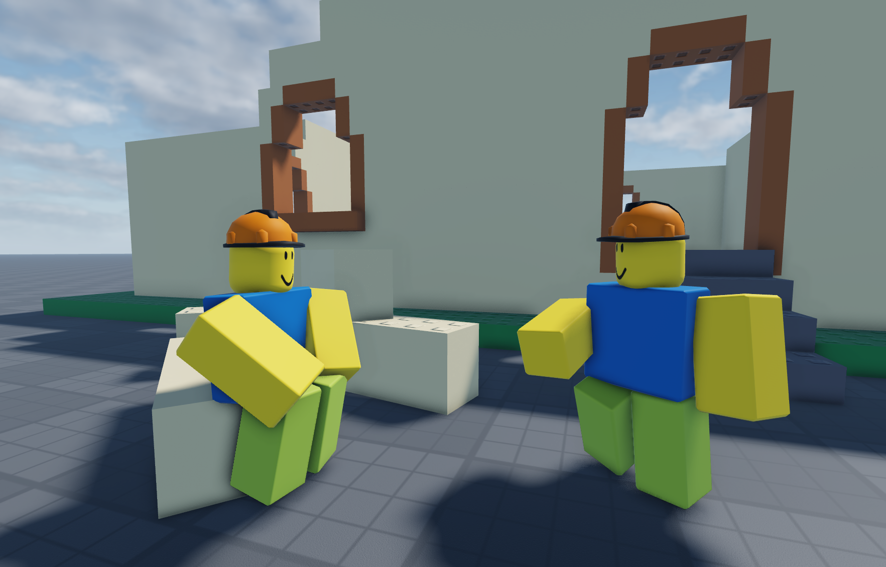
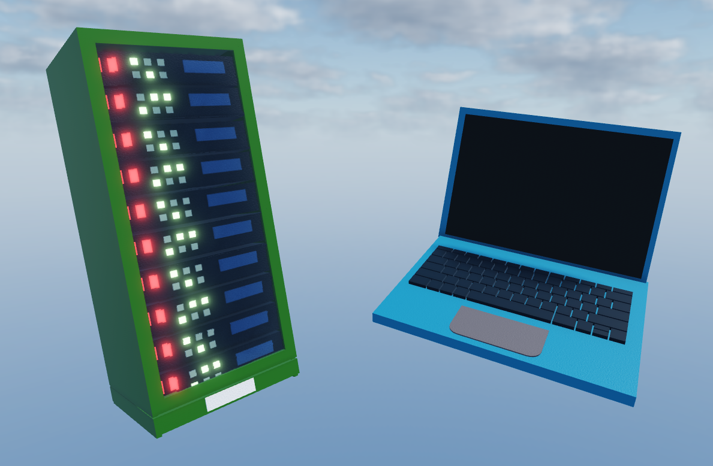
Roblox uses a client-server model. The Workspace exists on both sides:
Communication between server and client is done using RemoteEvents and RemoteFunctions.
CollectionService tags to manage groups of objects.ReplicatedStorage or ServerStorage.Before publishing you games, every game needs to be tested for any issues to ensure everything works as intended. No game can be made without testing.
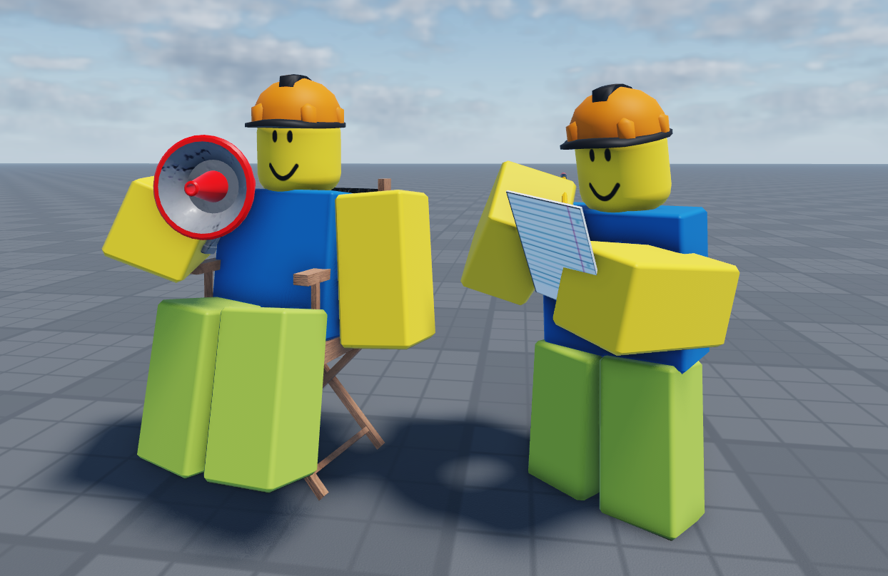
To start testing, simply navigate to the top left of your screen. There should be a text saying "Test", with a blue play button, pause button, a red end button and a "PC" icon to switch between server or client view.
Since roblox is also a physics engine, you can apply many physical mechanics into the environment. There are many types of properties that determines a part's interaction
Baseparts are the fundamental building blocks for modeling. They represent physical objects that can be placed in the game world and interacted with by players, scripts, and physics.
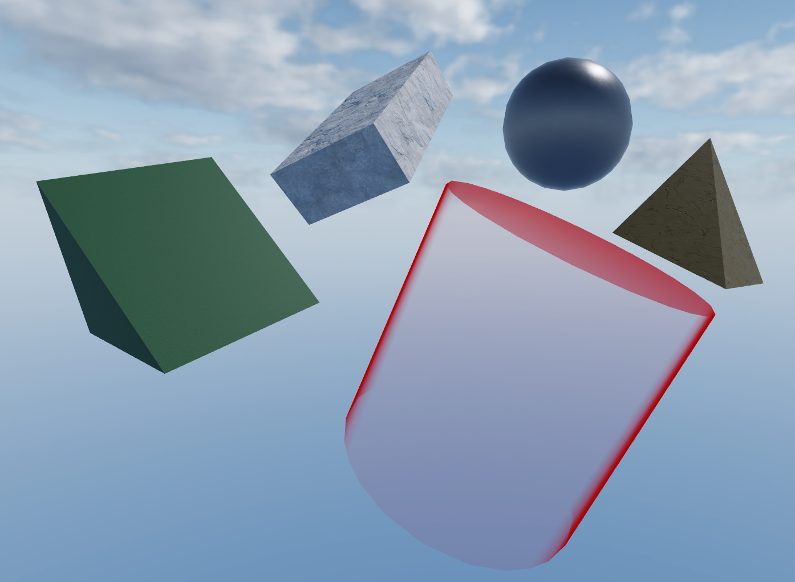
Models is a parent grouping used to contain multiple instances of baseparts and special objects
They can contain
The image below shows an example of a model character, with their rootpart being highlighted in gray.
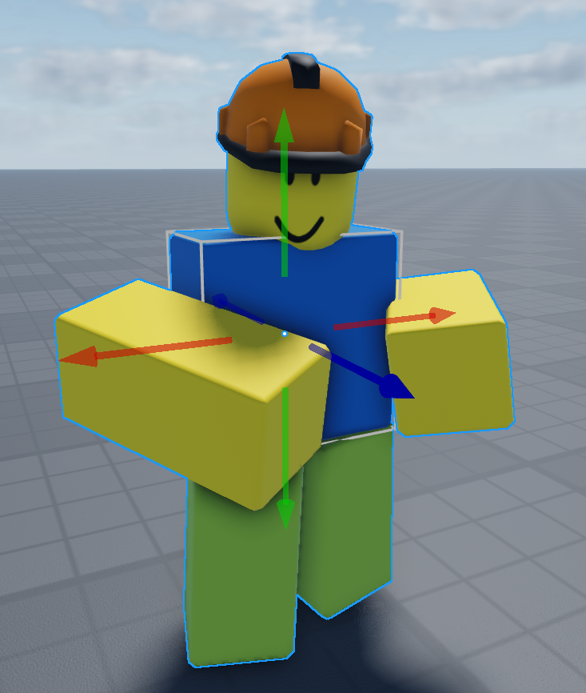
Anchored for static structures like buildings.Materials (wood, metal, glass) for realistic appearance.The most important and customisable basepart in roblox studio. To combine two parts together into one without grouping them, you can use union operations to combine all their properties into one. Note that colours can be different even when unionioned except materials
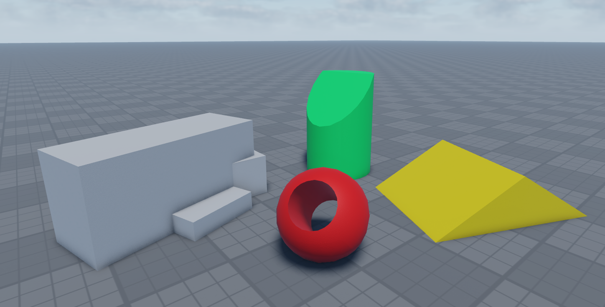
A Union combines two or more parts into a single basepart. This is useful for creating complex shapes without grouping. Unlike models, unions merge geometry into one object, which can reduce part count and improve performance. However, note that while colours can differ, materials are unified across the union.
You can union parts using "CTRL + Shift + G". To seperate or undo and union, do "CTRL + Shift + U"
A Negative Union allows you to subtract one part from another. By toggling a part to negative, it acts like a "cutter" that removes geometry from the positive part. This is especially useful for hollowing out shapes, carving details, or creating openings.
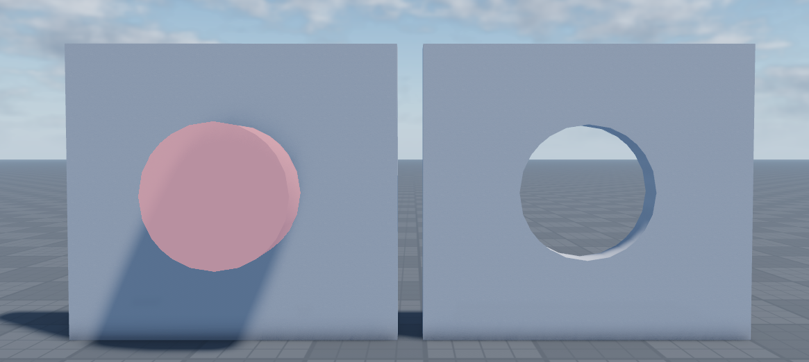
You can toggle parts between positive and negative using "CTRL + Shift + N". To cut out parts, simply union a positive part with a negative part.
The Intersect operation keeps only the overlapping volume of selected parts. If two parts share a common area, that intersection becomes the new shape. If no intersection exists, you would receive an error (AKA zero results). This is useful for precise modeling, trimming shapes, or creating complex cutouts.
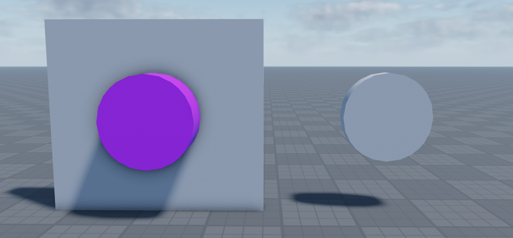
To intersect two parts, overlap two positive parts then "CTRL + Shift + I".
LuaU is Roblox's custom version of the Lua programming language. It is designed for performance, safety, and scalability in Roblox games. LuaU extends standard Lua with new features and optimizations while keeping the language familiar.
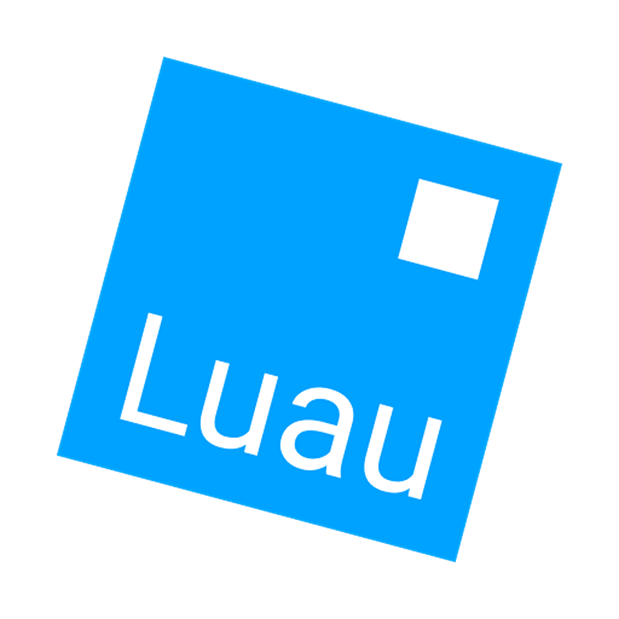
-- Variables
local playerName: string = "David"
-- Functions
local function greet(name: string): string
return "Hello, " .. name
end
print(greet(playerName))
string, number, boolean, etc.).Workspace, Players, and ReplicatedStorage.
-- Script to give points when a player touches a part
local part = workspace.Part
part.Touched:Connect(function(hit)
local player = game.Players:GetPlayerFromCharacter(hit.Parent)
if player then
local leaderstats = player:FindFirstChild("leaderstats")
if leaderstats then
leaderstats.Points.Value += 10
end
end
end)
Roblox Studio provides three main types of scripts, each serving a different purpose in game development:
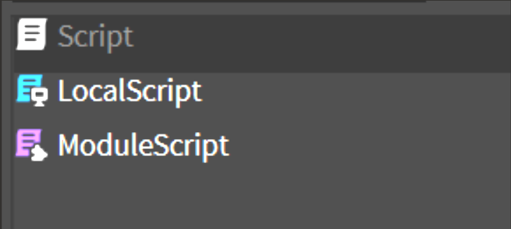
Server Scripts are the backbone of multiplayer games. They manage gameplay logic, physics, and security. Because they run on the server, changes made here are authoritative and replicated to all players.
This Script changes the colour of the part to red for both the server and all clients
-- Place this in ServerScriptService or inside the part
local part = workspace.Part -- replace "Part" with your part's name
-- Change the part's color to red
part.Color = Color3.fromRGB(255, 0, 0)
Local Scripts run on individual clients. They are used for GUI interactions, camera control, and visual effects.
They cannot be placed in Workspace or ServerStorage; instead, they must be inside client containers such as
StarterPlayerScripts, StarterCharacterScripts, or PlayerGui.
Since Local Scripts have limited authority, they should never be used to determine critical game outcomes.
For server-client communication, use RemoteEvents or RemoteFunctions.
This Local Script changes the colour of the part to red for only the running client
-- Place this in StarterPlayerScripts or StarterGui
local part = workspace.Part -- replace "Part" with your part's name
-- Change the part's color to blue (client-side only)
part.Color = Color3.fromRGB(0, 0, 255)
Module Scripts act as libraries of reusable code and data. They help reduce repetition by allowing developers to define functions once and reuse them across multiple scripts.
Both Server Scripts and Local Scripts can access Module Scripts using the require() function.
This Local Script changes the colour of the part to red for only the running client
-- ModuleScript placed inside ReplicatedStorage
local DataModule = {}
DataModule.Items = {
Sword = {Damage = 25},
Shield = {Defense = 40}
}
function DataModule.GetItem(name)
return DataModule.Items[name]
end
return DataModule
-- In another script
local ReplicatedStorage = game:GetService("ReplicatedStorage")
local DataModule = require(ReplicatedStorage:WaitForChild("DataModule"))
local sword = DataModule.GetItem("Sword")
print(sword.Damage) -- prints 25
RemoteEvents and RemoteFunctions for safe server-client communication.Variables are simple named containers that stores information so that they can be reused later in a later code. They can contain information such as integers, strings, booleans, lists and dictionary.
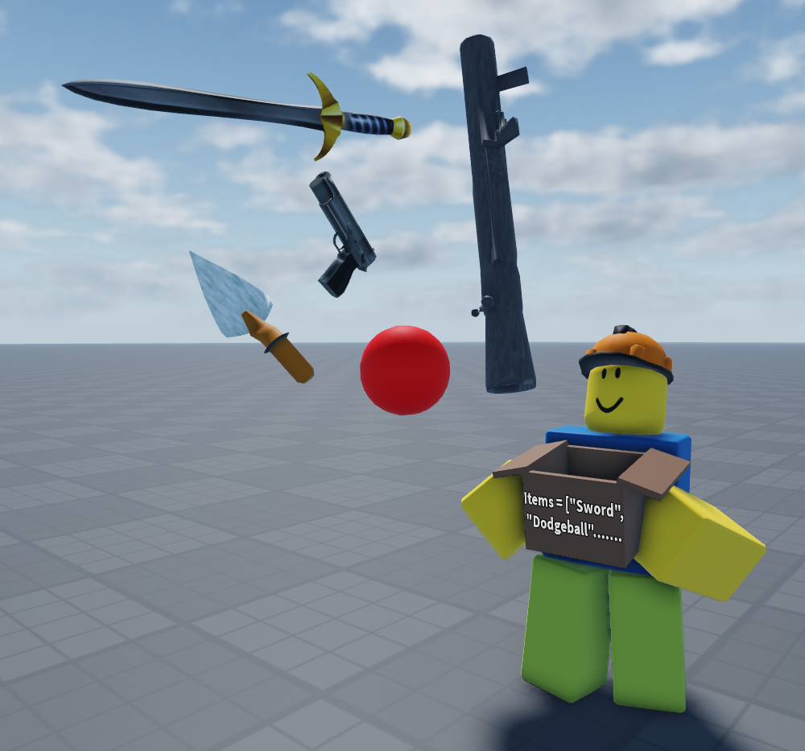
Below is a code example of variables. Do remember to open your output view!
-- String variable
local playerName = "John Doe"
-- Number variables
local playerAge = 17
local coins = 250
-- Boolean variable
local isVIP = true
-- Table variable (like a list)
local inventory = {"Sword", "Shield", "Potion"}
-- Print them out
print("Player Name: " .. playerName)
print("Age: " .. playerAge)
print("Coins: " .. coins)
print("VIP Status: " .. tostring(isVIP))
print("Inventory: " .. table.concat(inventory, ", "))
Variables are also changeable. This can be used to update a variable to pass down updated information for other codes. You can either replace a variable or add onto a variable
-- String variable--
local coins = 10
local playerName = "John Doe"
print("Starting coins: " .. coins)
print("Player name: " .. playerName)
-- Change the values
coins = 25
playerName = "James"
print("Updated coins: " .. coins)
print("Updated player name: " .. playerName)
In scripting, bugs are almost always garanteed to happen. Some can be easily detected via the output tab with an error. However, value bugs with in correct formats requires heavy testing to be found
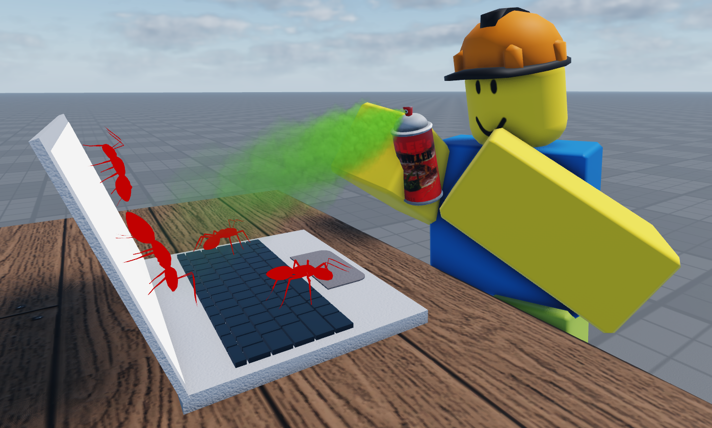
The output tab can be found in the middle top of your sceen under the "Script" tab
The most important structure in every single game. They are important to keep all games to keep going. Without loops, everything would only run once.
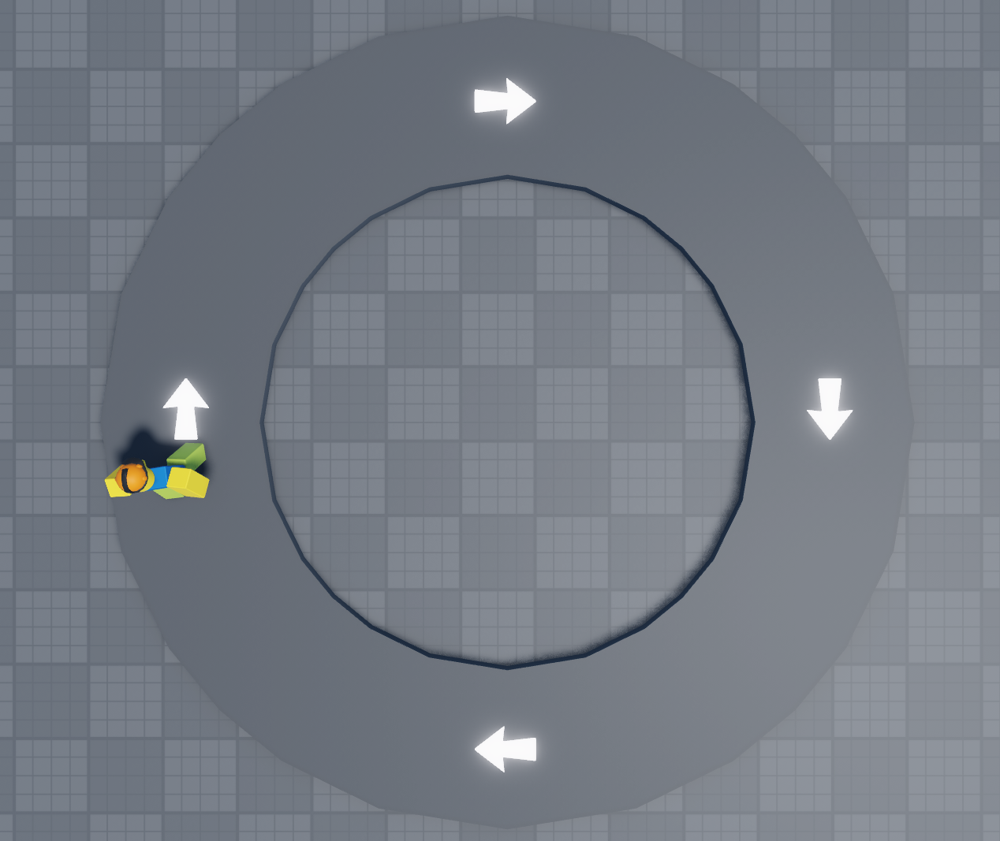
There are many ways to use loops in many game features. These can be
task.wait() is used inside the loop to ensure that studio does not crash! This is especially more important in while true do loops.
-- Checks for condition before running the code
local count = 0
while count < 5 do
print("Count is", count)
count = count + 1
end
-- Checks for condition after running the code
local count = 0
repeat
print("Count is", count)
count = count + 1
until count >= 5
for i = 1, 5 do
print("Iteration", i)
end
-- You can also step by a custom increment:
for i = 10, 0, -2 do
print("Countdown:", i)
end
local fruits = {"Apple", "Banana", "Cherry"}
for index, fruit in ipairs(fruits) do
print(index, fruit)
end
while true do
print("Looping every second")
wait(1)
end
To ensure that your coding structure remains as neat as possible, you can use functions as a way to reduce code repetition.
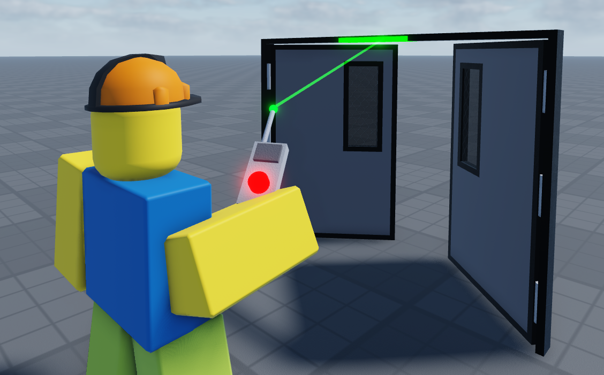
Instead of repeating the same exact code over again, you can use functions to reuse the same code again. Functions also support for reusing of code logic with differing variables.
-- Define a function
local function greetPlayer(name)
print("Hello, " .. name .. "! Welcome to the game.")
end
-- Call the function
greetPlayer("John")
greetPlayer("Alex")
Functions can also be stored inside module codes so that other scripts can reuse that exact function, just like an API.
For the test below, ensure you have a module script called MyModule placed inside ReplicatedStorage
-- Module Script
local MyModule = {}
function MyModule.Greet(name)
return "Hello, " .. name .. "!"
end
return MyModule
-- Script
local ReplicatedStorage = game:GetService("ReplicatedStorage")
local MyModule = require(ReplicatedStorage:WaitForChild("MyModule"))
-- Call the function from the module
local message = MyModule.Greet("Alex")
print(message)
To allow client-server communication, events can be used to whitelist a certain amount of data to be sent to the server for decision making.
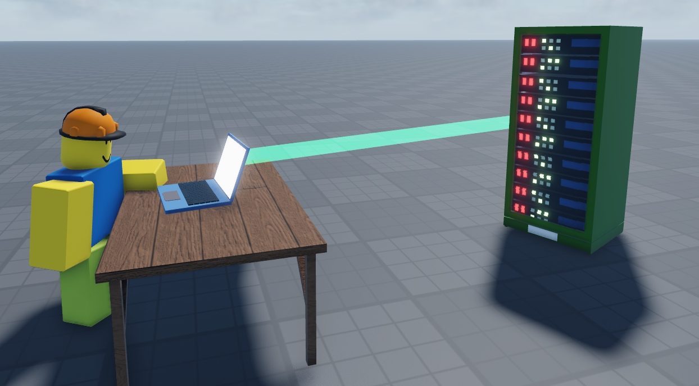
There are only two types of events and they can be either bindable or remote
-- Sender
BindableEvent:Fire("Hello World")
-- Listener
BindableEvent.Event:Connect(function(message)
print("Got BindableEvent:", message)
end)
-- Sender
local result = BindableFunction:Invoke(10, 20)
print("Result:", result)
-- Listener
BindableFunction.OnInvoke = function(x, y)
return x + y
end
-- Client Sender
RemoteEvent:FireServer("Hello from Client")
-- Server Listener
RemoteEvent.OnServerEvent:Connect(function(player, message)
print(player.Name .. " sent:", message)
end)
-- Server Sender
RemoteEvent:FireClient(player, "Hello back!") -- Fires To Specific Player Client
RemoteEvent:FireAllClients("Broadcast message") -- Fires To All Player Client
-- Client Listener
RemoteEvent.OnClientEvent:Connect(function(message)
print("Client received:", message)
end)
-- Client Sender
local result = RemoteFunction:InvokeServer(5, 6)
print("Client got:", result)
-- Server Listener
RemoteFunction.OnServerInvoke = function(player, x, y)
return x * y
end
-- Server Sender
local result = RemoteFunction:InvokeClient(player, "Ping")
print("Server got:", result)
-- Client Listener
RemoteFunction.OnClientInvoke = function(message)
return "Pong to: " .. message
end
Raycasts are one of the most essential instance in games. You can imagine it as a instant laser that detects collisions.
It requires a start point and a direction. You cannot simply just state an endpoint position.
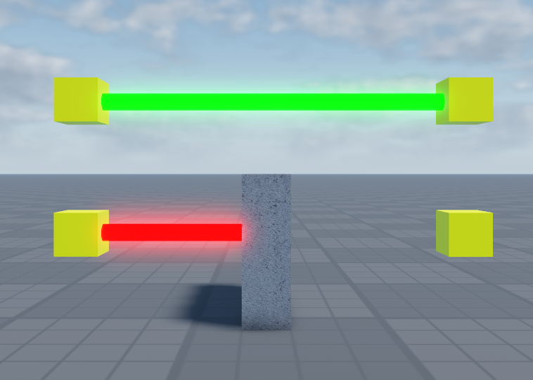
-- Assume you have two parts in Workspace: PartA and PartB
local partA = workspace.PartA
local partB = workspace.PartB
-- Define raycast parameters
local raycastParams = RaycastParams.new()
raycastParams.FilterType = Enum.RaycastFilterType.Exclude
raycastParams.FilterDescendantsInstances = {partA} -- ignore the source part itself
-- Calculate direction from PartA to PartB
local origin = partA.Position
local direction = (partB.Position - partA.Position)
-- Perform raycast
local result = workspace:Raycast(origin, direction, raycastParams)
-- Handle result
if result then
print("Ray hit:", result.Instance.Name)
if result.Instance == partB then
print("Direct line of sight to PartB!")
else
print("Blocked by:", result.Instance.Name)
end
else
print("Ray did not hit anything.")
end
while true do loop with a task.wait()
Making region based interaction can be made via the use of region3. Region3 helps to detect the types of objects within itself.
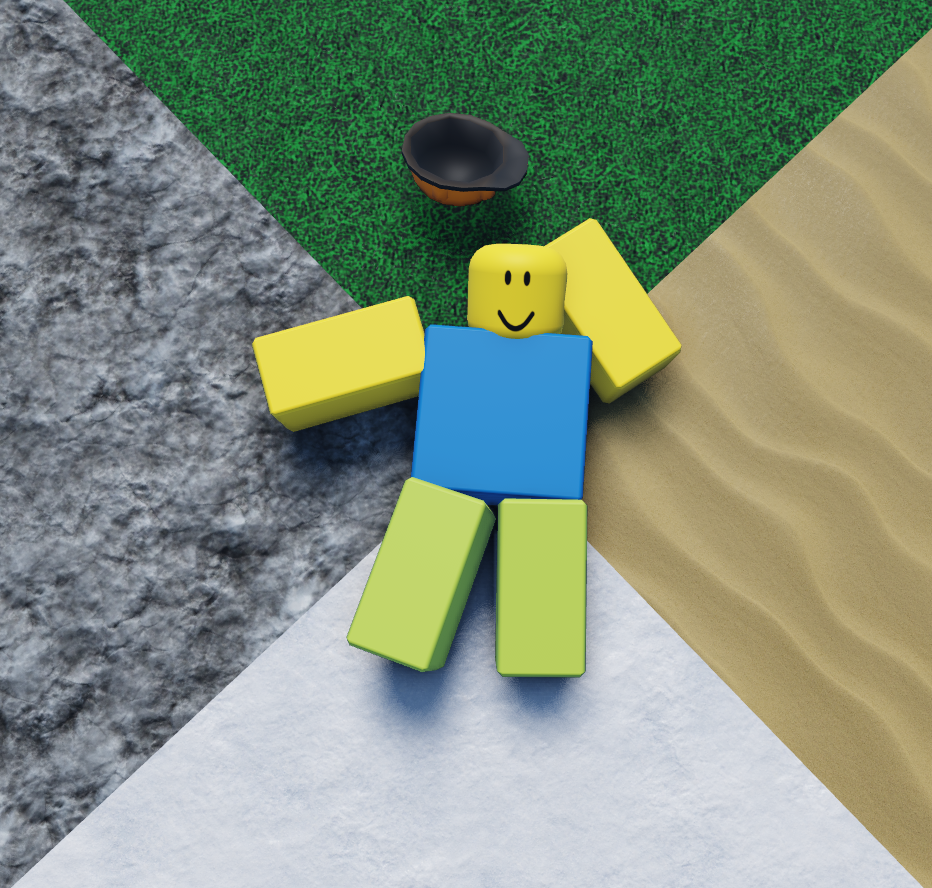
Region3 can be used for multiple features.
-- Define the corners of the region
local minCorner = Vector3.new(0, 0, 0) -- lower corner
local maxCorner = Vector3.new(20, 10, 20) -- upper corner
-- Create the Region3
local region = Region3.new(minCorner, maxCorner)
-- Expand to grid (optional, useful for terrain operations)
region = region:ExpandToGrid(4)
-- Find parts inside the region
local parts = workspace:FindPartsInRegion3(region, nil, math.huge)
-- Loop through results
for _, part in ipairs(parts) do
print("Found part:", part.Name)
-- Check if part belongs to a player character
local character = part.Parent
if character and character:FindFirstChild("Humanoid") then
print("Player detected:", character.Name)
end
end
Event though Region3 is useful, it has its own problems.
Instead of Region3, you can instead use GetPartBoundsInBox with OverlapParams to only detect certain parts in a folder/model. This can help with performance if the zone is located in a very decorated environment
-- Zone is listed as a Block Basepart
local zonePart = workspace.Zone
local params = OverlapParams.new()
params.FilterType = Enum.RaycastFilterType.Whitelist
params.FilterDescendantsInstances = {workspace.Folder} -- Only Children of "Folder" can be detected
-- This code runs only once, Use a while loop for continuos check
local parts = workspace:GetPartBoundsInBox(zonePart.CFrame, zonePart.Size, params)
NPCs in roblox are dumb. That is unless you give them pathfinding! This is extremely important for any games that rely on interactive NPCs but also the most difficult to implement.
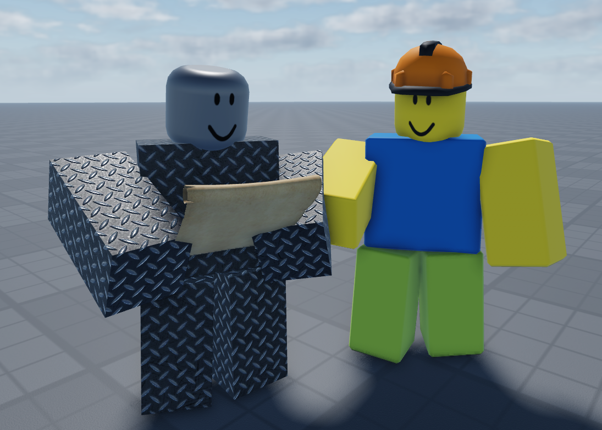
Pathfinding can be used for many features, But mainly NPC behaviour
Before knowing how to create a path, we need to know how to allow npcs to move to a target. The script below simply guides the NPC directly to a target position in a straight line.
-- Script inside a model of a chosen NPC
local npc = script.Parent
local humanoid = npc:WaitForChild("Humanoid")
local hrp = npc:WaitForChild("HumanoidRootPart")
-- Replace with your goal object (e.g., a Part named "Goal")
local goal = workspace:WaitForChild("Goal")
-- Loop to keep moving toward the goal
while task.wait(0.1) do
if goal and goal:IsA("BasePart") then
-- Move directly toward the goal position
humanoid:MoveTo(goal.Position)
end
end
PathfindingService is one of the accessible service to enable this feature. For now we wil run a code that executes once on how pathfinding nodes are created.
-- Services
local PathfindingService = game:GetService("PathfindingService")
-- Define start and target positions
local startPos = Vector3.new(0, 5, 0) -- arbitrary start point
local target = workspace:WaitForChild("Goal") -- a Part named "Goal"
-- Create path object
-- Do note that the parameters affects how the path is calculated.
-- An NPC with low jump power will attempt to jump over a high wall if the parameter states the jump power to be higher than the npc's capability
local path = PathfindingService:CreatePath({
AgentRadius = 2, -- Determines how minimum distance node has to be from an obstacle
AgentHeight = 5, -- Determines if the agent can fit under ceilings or through doorways
AgentCanJump = true, -- Determines if the NPC is allowed to jump. Compliments "Agent Height"
AgentJumpHeight = 10, -- Determines the maximum vertical distance the agent can jump up when computing paths
AgentMaxSlope = 45, -- Determines the maximum angle a path must be to be considered passable by node
})
-- Compute path
path:ComputeAsync(startPos, target.Position)
-- Visualize waypoints
local waypoints = path:GetWaypoints()
for i, waypoint in ipairs(waypoints) do
local marker = Instance.new("Part")
marker.Size = Vector3.new(1, 1, 1)
marker.Shape = Enum.PartType.Ball
marker.Material = Enum.Material.Neon
marker.Color = Color3.fromRGB(170, 0, 255) -- neon purple
marker.Anchored = true
marker.CanCollide = false
marker.Position = waypoint.Position
marker.Parent = workspace
print("Waypoint " .. i .. " at:", waypoint.Position)
end
Now lets combine both NPC moving logic with PathfindingService to make a simple and somewhat optimised smart NPC!
-- Place this Script inside your NPC model
local npc = script.Parent
local humanoid = npc:WaitForChild("Humanoid")
local hrp = npc:WaitForChild("HumanoidRootPart")
local PathfindingService = game:GetService("PathfindingService")
local RunService = game:GetService("RunService")
-- Replace with your goal object (e.g., a Part named "Goal")
local goal = workspace:WaitForChild("Goal")
-- Settings
local recomputeThreshold = 5 -- studs; only recompute if target moved this far
local lastGoalPos = goal.Position
-- Function to compute and follow path
local function followPath()
local path = PathfindingService:CreatePath({
AgentRadius = 2,
AgentHeight = humanoid.HipHeight + hrp.Size.Y,
AgentCanJump = true,
AgentJumpHeight = humanoid.JumpPower / 2,
AgentMaxSlope = 45,
})
path:ComputeAsync(hrp.Position, goal.Position)
if path.Status == Enum.PathStatus.Success then
local waypoints = path:GetWaypoints()
for _, waypoint in ipairs(waypoints) do
-- Visualize waypoint
local marker = Instance.new("Part")
marker.Size = Vector3.new(1, 1, 1)
marker.Shape = Enum.PartType.Ball
marker.Material = Enum.Material.Neon
marker.Color = Color3.fromRGB(170, 0, 255) -- neon purple
marker.Anchored = true
marker.CanCollide = false
marker.Position = waypoint.Position
marker.Parent = workspace
-- Move NPC
humanoid:MoveTo(waypoint.Position)
humanoid.MoveToFinished:Wait()
-- Handle jumps
if waypoint.Action == Enum.PathWaypointAction.Jump then
humanoid:ChangeState(Enum.HumanoidStateType.Jumping)
end
end
else
warn("Path failed! NPC cannot reach the goal.")
end
end
-- Loop to update path only when target moves significantly
RunService.Heartbeat:Connect(function()
if goal then
local distMoved = (goal.Position - lastGoalPos).Magnitude
if distMoved >= recomputeThreshold then
lastGoalPos = goal.Position
followPath()
end
end
end)
Because pathfinding can be time consuming to handle, heres a available Module API you can get! https://create.roblox.com/store/asset/99009254123330/Forbidden-V2-Unpackaged
You can learn about this API via: https://github.com/crit-DEV/Forbidden-V2/tree/main/docs